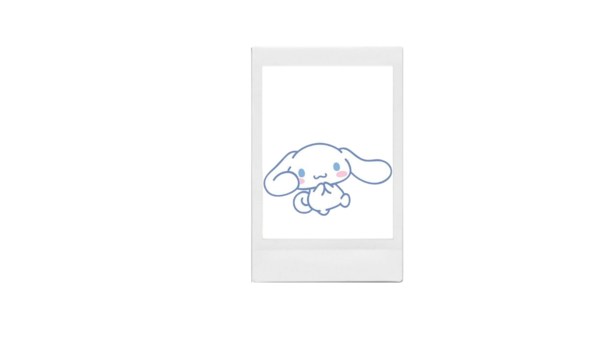
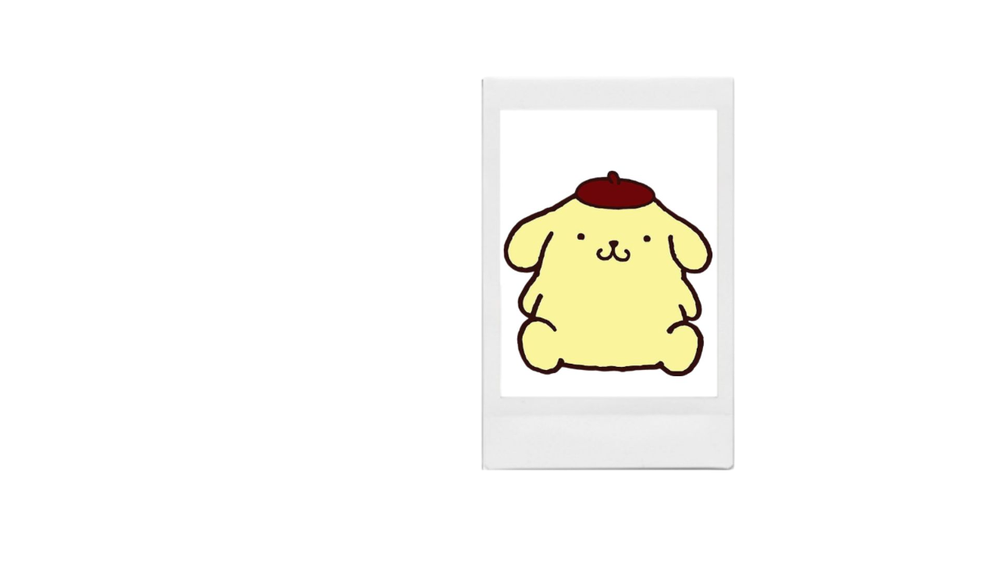

Sanrio es una empresa japonesa
de estilo de vida que diseña y licencia personajes populares de
la cultura "kawaii", como Hello Kitty, My Melody y
Cinnamoroll. La empresa fue fundada en 1960 y opera con el lema
"Small Gift, Big Smile, vendiendo una amplia gama de productos que incluyen papelería,
regalos y accesorios en todo el mundo.
Es un personaje de Sanrio y parte del universo My Melody. Ella es la autoproclamada rival doppelgänger de My Melody. Kuromi es un conejo blanco [1] con una cola negra como la de un diablo y usa un sombrero de bufón negro con una calavera rosa que cambia su expresión para coincidir con su estado de ánimo.
ᯓ★MY MELODY★ᯓ
My melody, es un personaje de la compañía de caracterización japonesa Sanrio , diseñado por Yasuko Matsumoto, y es la protagonista principal del universo My Melody . Es una conejita blanca que usa una capucha roja o rosa que cubre su cabeza y generalmente tiene un lazo o una flor en su oreja dereca [1]Las orejas en sí mismas a menudo están curvadas hacia adelante.
˚𖦹⋆CINNAMOROLL⋆𖦹˚

Cinnamoroll (シナモロールShinamorōru ) es un personaje de Sanrio y el protagonista principal del universo Cinnamoroll . Nació el 6 de marzo, en una nube en lo alto del cielo. Cinnamoroll [1] es un perro pequeño y regordete con pelaje blanco, ojos azules, mejillas rosadas, una cola regordeta y rizada que se asemeja a un rollo de canela, orejas largas y gruesas que le permiten volar.
⊹₊｡POMPOMPURIN｡₊⊹

Pompompurin es un personaje presentado por la compañía japonesa Sanrio y es el protagonista principal del universo Pompompurin. Purin, un golden retriever amarillo [1], nació un día soleado el 16 de abril. Pompompurin vive en su propia cesta en el recibidor de la casa de su hermana-dueña. Su marca registrada es su boina marrón que siempre está sobre su cabeza. La comida favorita de Pompompurin es el pudín de su mamá.
OTROS PERSONAJES
Usa el motor de busqueda para encontrar información sobre otros presonajes del mundo de sanrio